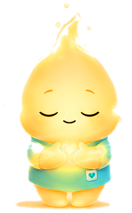
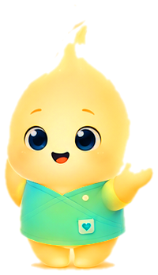

O que o Lumi faz por você
Tudo baseado em ACT, DBT e TCC — ciência de verdade, com carinha fofa.
🫁
Respiração guiada
Diafragmática, 4-7-8, grounding 5-4-3-2-1 — e o Lumi respira junto com você.
🤸
Micro-pausas físicas
Alongar, hidratar, olhar para longe. O corpo que cuida também é instrumento de trabalho.
💛
Check-in emocional
Na chegada e no fim do dia: "como você tá?" — 15 segundos que viram autoconhecimento.
📊
Painel da semana
Suas pausas, seu humor chegada × saída e sua sequência de dias se cuidando.
💊
Pílulas de psicoeducação
Dicas curtas de quem viveu 13 anos de hospital por dentro — compartilháveis nos stories.
🤫
Respeita seu atendimento
Modo "Em atendimento" com 1 clique, silêncio em apresentações e fora do seu expediente.

respira junto

chama você com carinho

comemora sua sequência